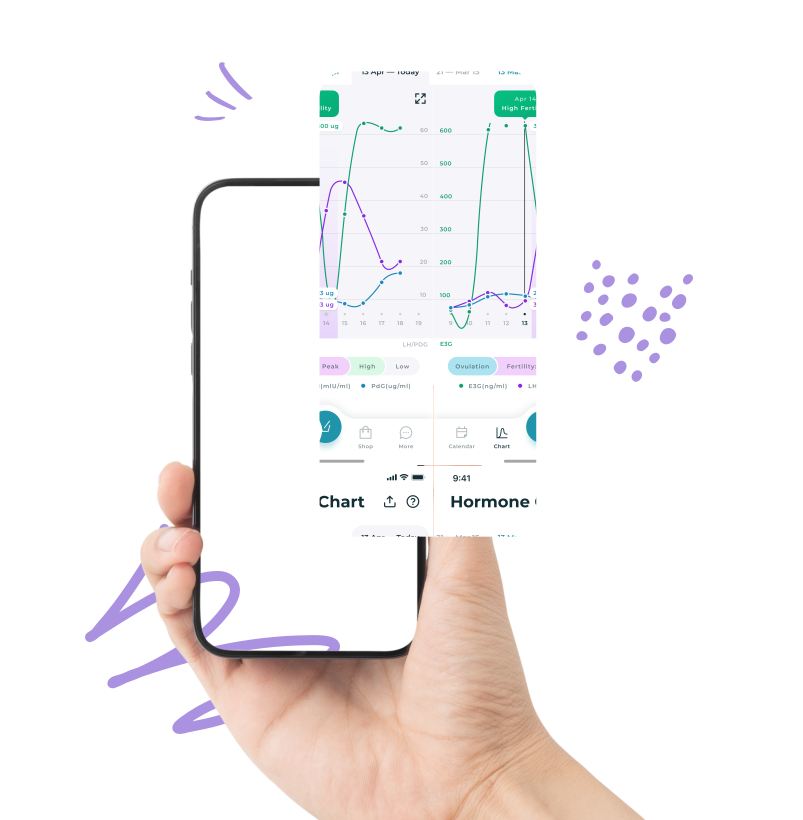
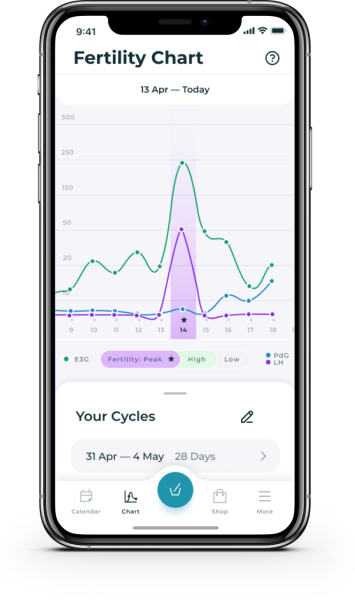
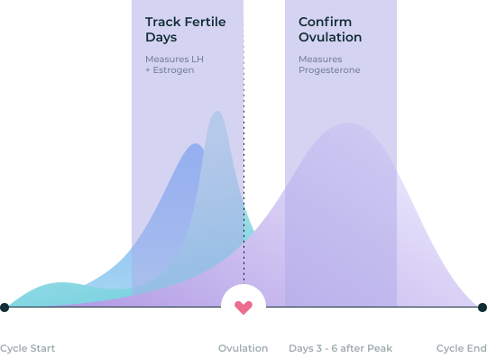
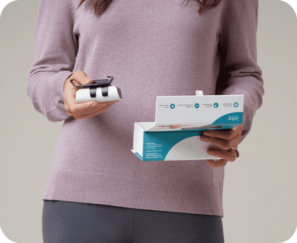
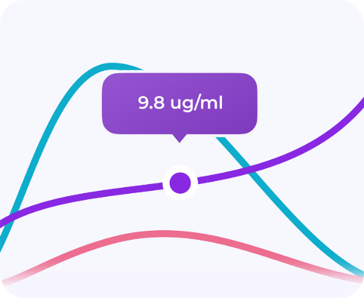

Track your fertility hormones at home, in 5 minutes.
Get accurate results of Estrogen, LH and Progesterone with Inito, the all-in-one, FDA-registered fertility monitor.

as seen on
Not all ovulation tests are created equal
Most ovulation tests predict your fertile days by
tracking Estrogen and Luteinizing Hormone (LH),
but fail to measure the hormone that actually confirms
your ovulation and supports pregnancy: Progesterone.
What makes Inito different?
Inito is the only fertility monitor that measures all
3 hormones on a single test strip, showing you a full
picture of your cycles with results unique to your body.
Predict and confirm your ovulation with actual data
Unlike most ovulation tests that only give you "yes/no" results, Inito provides real numerical values of your fertility hormones.
If you have irregular cycles, actual data is necessary to know exactly when you ovulate, and when is the best time to try to conceive.


Estrogen
Luteinizing Hormone
Progesterone
Never miss a day again with Inito
Inito tracks up to 6 fertile days and confirms ovulation by measuring all 3 hormones in just 5 minutes:
Estrogen, which rises 3-4 days before ovulation
LH, which surges 24-36 hours before ovulation
Progesterone (PdG), which rises after ovulation
“Inito is all that you need to give you the best chance of conception."
Dr. Rachel Wagner MD
Why measure Progesterone?
Anovulation (having a menstrual cycle with no egg) is actually a common occurrence, affecting 1 in 10 women*.
A sure way to confirm ovulation is a rise in Progesterone level after peak fertility. Progesterone also supports
implantation and elevated levels of PdG during the 7-10 day window after ovulation correlates to higher chances of a successful pregnancy.
* Source: National Institutes of Health
Why Inito is the smarter way to get pregnant

Adapts to your unique irregular cycle
Most ovulation kits have a set value or a threshold, making them likely to give a
false read if your hormones fall outside the average range.
Every woman is unique, especially with a condition like PCOS or Thyroid which can
influence hormone levels. Inito measures real values of your hormones to personalize
results to the unique you.
Inito tracks everything so you don’t have to
The Inito Fertility Monitor comes with a free easy-to-use App, so you can track
your fertile days with ease and know exactly when you ovulate.
Our App notifies you for everything:
Your fertility levels
When to test on the right days
When you’ve successfully ovulated
And when to roll into bed!

Get charts and actual values of your hormones
Actual numerical values are necessary to know whether your PdG levels are
sufficient enough to support a healthy pregnancy.
Studies show that Pdg levels lower than 7.9ng/ml in serum (around 10ug/ml PdG)
6-8 days after ovulation are associated with lower pregnancy outcomes.
Your own fertility lab at your fingertips
Easy-to-read fertility diagnostic results directly on your iPhone, in just 5 minutes.
* The Inito Fertility Monitor currently supports iPhone 7 and up. Android phones are not supported at the moment.
1
Dip the test strip in urine for 15 seconds.
2
Attach the Inito Fertility Monitor to your iPhone*.
3
Insert the test strip into the Inito Fertility Monitor.
4
Get personalized results on our App in 5 minutes.
Inito tells you all you need to monitor your fertility
I made comparisons with other brands to allow me to choose the better product better. Inito tests all three of the hormones - LH, Estrogen, and Progesterone all in one stick. How can other products ignore measuring progesterone? It’s a no brainer! You guys are tops. I highly recommend Inito
Krista Wilhelm
May 22, 2021
Inito tells you all you need to monitor your fertility
I made comparisons with other brands to allow me to choose the better product better. Inito tests all three of the hormones - LH, Estrogen, and Progesterone all in one stick. How can other products ignore measuring progesterone? It’s a no brainer! You guys are tops. I highly recommend Inito
Krista Wilhelm
May 22, 2021
Inito tells you all you need to monitor your fertility
I made comparisons with other brands to allow me to choose the better product better. Inito tests all three of the hormones - LH, Estrogen, and Progesterone all in one stick. How can other products ignore measuring progesterone? It’s a no brainer! You guys are tops. I highly recommend Inito
Krista Wilhelm
May 22, 2021
Inito tells you all you need to monitor your fertility
I made comparisons with other brands to allow me to choose the better product better. Inito tests all three of the hormones - LH, Estrogen, and Progesterone all in one stick. How can other products ignore measuring progesterone? It’s a no brainer! You guys are tops. I highly recommend Inito
Krista Wilhelm
May 22, 2021
Inito tells you all you need to monitor your fertility
I made comparisons with other brands to allow me to choose the better product better. Inito tests all three of the hormones - LH, Estrogen, and Progesterone all in one stick. How can other products ignore measuring progesterone? It’s a no brainer! You guys are tops. I highly recommend Inito
Krista Wilhelm
May 22, 2021
Your top questions, answered
What results does Inito give?
Inito gives results as: High Fertility,
Peak Fertility or Ovulation Confirmed. Inito also shows you the
charts and actual values of all 3 hormones.
Do I need to use a test strip for each hormone?
Inito gives results as: High Fertility,
Peak Fertility or Ovulation Confirmed. Inito also shows you the
charts and actual values of all 3 hormones.
How many test strips are required per cycle?
Inito gives results as: High Fertility,
Peak Fertility or Ovulation Confirmed. Inito also shows you the
charts and actual values of all 3 hormones.
Will inito work if I have pcos?
Inito gives results as: High Fertility,
Peak Fertility or Ovulation Confirmed. Inito also shows you the
charts and actual values of all 3 hormones.
Do medications affect the results?
Inito gives results as: High Fertility,
Peak Fertility or Ovulation Confirmed. Inito also shows you the
charts and actual values of all 3 hormones.
How accurate is Inito?
Inito gives results as: High Fertility,
Peak Fertility or Ovulation Confirmed. Inito also shows you the
charts and actual values of all 3 hormones.